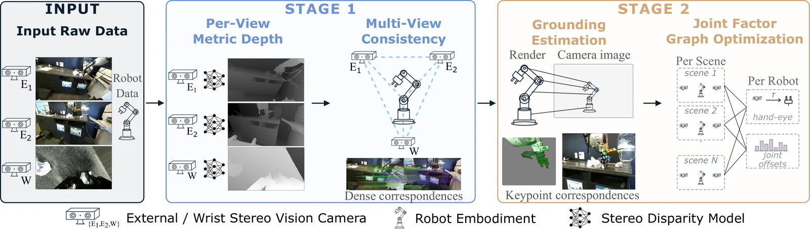
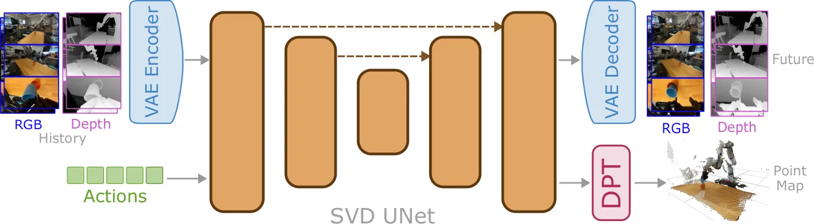
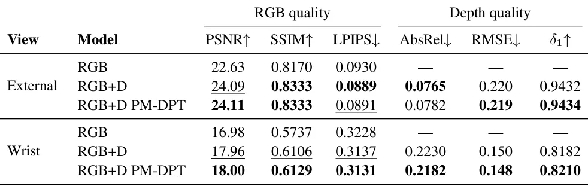
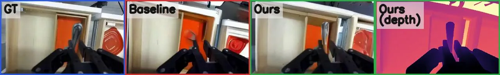

O problema: modelos de mundo que parecem bons mas não entendem geometria
Modelos de mundo (world models) são redes neurais que aprendem a simular o que acontece quando um robô executa uma ação. Em vez de usar um simulador tradicional baseado em física, esses modelos aprendem diretamente de dados reais: você mostra milhares de vídeos de robôs manipulando objetos, e a rede aprende a prever o que aconteceria se o robô movesse o braço de determinada forma.
O problema é que os modelos atuais são treinados apenas com vídeos RGB. Eles geram sequências que parecem plausíveis quadro a quadro, mas não formam um mundo 3D consistente. Se você olhar a mesma cena de dois ângulos diferentes, as predições de profundidade não batem. Objetos mudam de forma ao longo do rollout (a sequência de quadros gerados autorregressivamente). O modelo não entende oclusão nem contato físico de verdade.
Isso é um problema sério porque todas as aplicações práticas — avaliar políticas, melhorá-las, fazer planejamento — dependem de geometria confiável. Se o modelo prevê que o braço do robô vai atravessar uma porta fechada como se fosse um fantasma, o sinal que você extrai dessa simulação não serve para nada.
Por que não basta copiar o que funciona em modelos geométricos de propósito geral
A solução óbvia seria supervisionar geometria diretamente durante o treinamento, como fazem modelos geométricos de fundação recentes. Mas essa receita não se transfere diretamente para robótica por dois motivos.
Primeiro, datasets de robótica não vêm com anotações 3D de qualidade. Conjuntos como o DROID capturam aparência e dinâmica de manipulação em escala real, mas as anotações geométricas são subprodutos da coleta, não o foco. Cenas de manipulação têm superfícies sem textura e especulares. Mesmo que você consiga calibração interna consistente entre câmeras, ela pode estar desacoplada do sistema de coordenadas do próprio robô — e aí você perde o vínculo crítico com a propriocepção e as ações do efetuador.
Segundo, modelos de mundo atuais dependem de priors delicados vindos de modelos de difusão de imagem e vídeo pré-treinados. Modificações arquiteturais convencionais para incorporar modalidades espaciais — como expandir os canais de entrada do VAE ou introduzir U-Nets paralelas de dois ramos — exigem reinicialização destrutiva de pesos. Isso arrisca corromper os priors visuais e de movimento que tornam esses backbones eficazes.
DROID-3D: recalibrando um dataset inteiro com um grafo de fatores
A primeira contribuição do paper é um pipeline de calibração que transforma o DROID — um dataset de teleoperação com mais de 70 mil episódios — em DROID-3D, uma versão com profundidade métrica densa e extrínsecos multi-view recalibrados.
O pipeline combina estimativa de profundidade estéreo aprendida com otimização conjunta via grafo de fatores. A ideia central é pooling: em vez de calibrar cada cena isoladamente, o sistema agrupa todos os episódios coletados do mesmo robô físico e recupera parâmetros cinemáticos compartilhados — offsets das juntas, calibração hand-eye — junto com extrínsecos por cena.
Concretamente, o pipeline tem dois estágios. No primeiro, cada par estéreo (câmeras externas e câmera de pulso) gera profundidade métrica via rede de correspondência global. Correspondências densas entre vistas inicializam extrínsecos relativos. No segundo estágio, um grafo de fatores une tudo: fatores de projeção entre câmeras, fatores de profundidade do robô (comparando profundidade renderizada do URDF com a observada), fatores de cinemática direta que amarram poses das juntas aos extrínsecos, e fatores de prior que regularizam offsets e hand-eye.
Essa formulação conjunta é crucial. Ela permite que evidência de milhares de cenas corrija erros sistemáticos — como um offset de junta mal calibrado — que um método por cena jamais detectaria.

DepthWorld: predição conjunta de RGB e profundidade sem quebrar o VAE pré-treinado
A segunda contribuição é a arquitetura DepthWorld, que consome essa supervisão 3D sem destruir os priors do Stable Video Diffusion. A sacada é spatial latent tiling: RGB e profundidade são codificados independentemente em uma grade latente espacialmente organizada (72 × 80) que alimenta a U-Net de denoising, mas o VAE pré-treinado permanece intocado.
Funciona assim. Cada frame de cada view (RGB e profundidade) passa pelo VAE encoder original, gerando um latente 9 × 10. Esses latentes são então arranjados em uma grade espacial que preserva a relação geométrica entre as views. A U-Net de difusão processa essa grade como uma imagem grande, fazendo denoising conjunto. Os latentes preditos são decodificados de volta para RGB pelo VAE decoder original.
Para profundidade, os autores adicionam um cabeçalho DPT (Dense Prediction Transformer) leve que opera sobre os latentes preditos e gera mapas de ponto 3D (X, Y, Z) com confiança pixel a pixel. Esse cabeçalho é treinado com duas perdas: uma perda de profundidade direta e uma perda auxiliar de point-map que supervisiona coordenadas 3D métricas no espaço da câmera.
O modelo é condicionado por ações do robô via cross-attention nas camadas da U-Net, seguindo a arquitetura do Ctrl-World. Durante o treinamento, o modelo vê context frames (frames iniciais da trajetória) e aprende a prever frames futuros dado um plano de ação. Durante rollout, ele gera autorregressivamente: a predição de um passo vira contexto para o próximo.

Resultados de calibração: ordem de grandeza melhor que baseline por cena
Os autores avaliaram a calibração em 5 laboratórios do DROID (cerca de 1.000 cenas). A baseline é um procedimento de refinamento por cena modelado no PointWorld: inicialização de extrínsecos via VGGT, seguida de otimização contra profundidade do robô usando S2M2 como fonte de profundidade.
DROID-3D supera a baseline em todas as métricas. Erro de reprojeção câmera-câmera: 23× melhor. Erro pulso-câmera: 13× melhor. Erro de profundidade do robô: 8× melhor. Mask IoU: +37 pontos absolutos. Além disso, a baseline falha em convergir em cerca de 18% das cenas (180 de 995), enquanto a otimização acoplada não tem modo de falha análogo por cena.
Em um setup de ground truth montado pelos autores com poses medidas via tabuleiro ChArUco, a abordagem recupera extrínsecos com erro mediano de 4.9 mm / 0.39° e hand-eye com 3 mm / 0.3°, a partir apenas de episódios de teleoperação. Offsets de juntas são recuperados com erro médio de 0.14° em todas as sete juntas. A baseline por cena atinge 72 mm / 3.0° — uma ordem de grandeza pior.
Em simulação REALM com poses GT exatas (50 configurações, viewpoints variados), a abordagem recupera extrínsecos com erro mediano de 6.4 mm / 0.3°.
Resultados de predição: profundidade melhora RGB em +1.48 dB PSNR
Os autores avaliaram três variantes em 256 trajetórias held-out do DROID com 10 rollouts autorregressivos consecutivos. RGB é o backbone Ctrl-World (apenas RGB multi-view). RGB+D é o modelo conjunto RGB-profundidade. RGB+D PM-DPT adiciona o cabeçalho auxiliar de point-map.
O resultado central: adicionar profundidade como alvo de predição conjunta melhora a qualidade RGB. O modelo RGBD supera a baseline RGB-only em todas as três métricas RGB: +1.48 dB PSNR em views externas e +1.02 dB em view de pulso. SSIM e LPIPS também melhoram consistentemente.
Isso é surpreendente e importante. Não é apenas que você ganha profundidade de graça — a supervisão geométrica ativamente melhora a predição de aparência, mesmo que você só se importe com RGB. A hipótese dos autores é que forçar o modelo a manter consistência 3D entre views age como regularização, impedindo que ele gere aparências plausíveis mas geometricamente impossíveis.
A perda auxiliar de point-map (PM-DPT) refina ainda mais a acurácia de profundidade, especialmente em views de pulso, embora o ganho em RGB seja marginal. Para profundidade, o modelo atinge AbsRel de 0.078 em views externas e 0.105 em pulso, com δ1 (porcentagem de pixels com erro relativo < 1.25) acima de 0.90 em ambas.

Qualitativo: geometria correta permite raciocínio sobre oclusão e contato
As diferenças qualitativas são marcantes. Em um rollout, o modelo RGB-only falha em simular o robô pegando uma xícara vermelha conforme a trajetória ground truth — a geometria da interação simplesmente não fecha. DepthWorld simula a interação corretamente e produz um mapa de profundidade alinhado.
Em outro exemplo, o modelo RGB-only não consegue distinguir a porta aberta de um armário de uma superfície sólida. Ele simula o braço colidindo com a porta como se fosse uma parede. DepthWorld, por levar em conta a profundidade do braço e da porta, gera corretamente o braço entrando no armário.
No exemplo da Figura 1, o baseline RGB-only não mantém a forma de talheres ao longo do rollout — o objeto literalmente desaparece. DepthWorld preserva a geometria do objeto enquanto produz mapas de profundidade métrica de alta qualidade.
Esses casos ilustram o ponto central: sem supervisão geométrica, o modelo pode gerar pixels plausíveis localmente mas falha em raciocínio espacial básico. Com profundidade, ele entende oclusão, contato e persistência de objetos — exatamente o que você precisa para usar rollouts em planejamento ou avaliação de política.

O que o paper não mostra: limitações e questões em aberto
O paper não demonstra uso downstream real. Não há experimento de planejamento, avaliação de política ou policy improvement usando os rollouts do DepthWorld. A avaliação é inteiramente em métricas de predição (PSNR, SSIM, LPIPS, AbsRel) em trajetórias held-out. Saber se a melhoria de +1.48 dB PSNR se traduz em melhor performance em tarefa real fica em aberto.
A calibração DROID-3D foi validada em 5 laboratórios (cerca de 1.000 cenas) e um setup de ground truth próprio. Não sabemos como o pipeline se comporta em configurações muito diferentes — robôs de outra morfologia, arranjos de câmera exóticos, ambientes externos. A baseline falha em 18% das cenas; o método proposto não tem modo de falha por cena, mas pode ter modos de falha globais não explorados.
O modelo foi treinado e avaliado exclusivamente no DROID, que é teleoperação de manipulação em ambientes internos com o robô Franka. Generalização para outras morfologias, outras tarefas (locomoção, manipulação bimestre) ou outros domínios (outdoor, ambientes desestruturados) não foi testada.
A arquitetura preserva o VAE pré-treinado intocado, o que é uma vantagem para manter priors visuais. Mas o VAE foi treinado em imagens RGB naturais, não em profundidade. O paper não discute se treinar um VAE conjunto RGB-D desde o início poderia trazer ganhos adicionais, embora isso quebrasse o prior do Stable Video Diffusion.
Finalmente, o custo computacional não é detalhado. Processar 70 mil episódios com grafo de fatores e treinar um modelo de difusão multi-view em resolução razoável não é barato. O paper não reporta tempo de treinamento, número de GPUs ou custo de inferência por rollout.
Por que isso importa
Modelos de mundo são uma aposta importante em robótica: se você consegue simular fielmente o que acontece quando o robô age, pode treinar políticas em simulação, avaliar estratégias sem tocar no robô real, fazer planejamento em tempo real. Mas até agora, esses modelos eram cegos para geometria — geravam pixels bonitos sem entender o espaço 3D.
DepthWorld mostra que você pode ter os dois: aproveitar priors visuais poderosos de modelos de difusão de vídeo e adicionar consistência geométrica sem quebrar o que já funciona. E o resultado empírico central — que supervisão de profundidade melhora a predição RGB — sugere que geometria e aparência não são ortogonais, mas se reforçam mutuamente.
DROID-3D, por sua vez, transforma um dataset de teleoperação em um recurso 3D de qualidade. A abordagem de pooling via grafo de fatores é geral: qualquer dataset multi-view com URDF conhecido pode, em princípio, passar pelo mesmo pipeline. Isso abre caminho para treinar futuros modelos geométricos de fundação diretamente em dados de robótica real, em vez de depender de datasets sintéticos ou de reconstrução 3D genérica.
Juntos, DROID-3D e DepthWorld representam um passo concreto em direção a modelos de mundo cujos rollouts compõem em uma cena 3D única e coerente — a propriedade de que todas as aplicações downstream dependem.
O que fica
- DROID-3D recalibra 70 mil episódios do dataset DROID com profundidade métrica densa e extrínsecos multi-view, atingindo erro de reprojeção <0.7 px em 90% dos episódios via grafo de fatores.
- DepthWorld prevê simultaneamente RGB e profundidade via spatial latent tiling, preservando o VAE pré-treinado do Stable Video Diffusion e seus priors visuais.
- Supervisão de profundidade melhora predição RGB em +1.48 dB PSNR sobre baseline RGB-only, mostrando que geometria e aparência se reforçam mutuamente em modelos de mundo.
- Limitação: avaliação apenas em métricas de predição (PSNR, AbsRel), sem demonstração de uso downstream real em planejamento ou policy learning.
Paper original: DepthWorld: 3D World Model for Robot Manipulation
Comentários
Nenhum comentário ainda. Seja o primeiro.